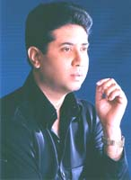

|
SAIKAT
MITRA, son of the illustrious singer and music composer, Lt.
Shyamal Mitra, was born on the 20th July, 1964, in Kolkata. Long before completing his graduation from the Calcutta University,
he decided to follow his father’s footsteps and made his entry into the world
of music. His debut performance was a charity show of “Kumar Sachin Dev Burman Memorial College”, where he received profuse appreciation.
From
then on, commenced a busy schedule of programmes for Saikat and he took up music
as his profession. After the untimely death of his father, Lt.
Shyamal Mitra, in 1987, he became the answer to the mass
audience of Bengal. He was then widely accepted all over Bengal.
His
first music album was an EP Disc from Sounwing in 1986. In 1987, he sang for Music India audio company. From 1988 onwards, he remained a regular
artiste of HMV, from where his cassettes of Bengali modern songs were
released. In 1994, he started a music company of his own – “GOLD DISC” – from where further his albums were released. Simultaneously, he
sang for other leading audio companies – HMV, Tips, Gathani, etc.
He
has been awarded “Hemanta Smriti Purashkar”, “Ritwik Ghatak Smriti Purashkar”, “Salil Choudhury Smriti Purashkar”, “Lions Award”, “R. D. Burman
Award”, “Kishore Kumar Award”, “Uttam Kumar Award”, etc.
He
has extensively toured India and abroad, giving solo performances. In 1992, he
attended the “North American Banga Sammelan” at Toronto, Canada.
Since then, he has been touring abroad widely – USA, UK, Sweden, Canada, Bangladesh, etc. – where he was invited to perform and has received
appreciation and honour.
He
has excelled as a singer, as well as a music composer. He has lent his voice in
many Bengali films – “Kenaram Becharam”, “Maa Ek Mandir”, “Natun Surya”, “Noti Binodini”, “Aagaman”, “Sujan Sakhi”, “Rin Mukti”, etc. He has also
sung in many teleserials – “Charitraheen” (Hindi music director Sri. Salil
Choudhury), “Seemarekha”, etc.
His
debut as a music director was the film “Misti Madhur”. He has also composed music for the films – “Bijoyee”, Miss Moitreyee”, and for many
teleserials. He has also composed music for Bengali modern songs
(non-film), both for his album and also for other artistes.
He
was the disciple of Pandit Prasun Banerjee and Smt. Uma Dey (Both were classical vocalists). He was the secretary of APPS (Association of
Professional Performing Singers), which is a leading organisation of West
Bengal.
He
has sung for eminent music directors like R. D. Burman, Bappi Lahiri, Sahil Choudhury, Hemanta Mukherjee, Bhupen Hazarika, Shyamal Mitra, Abhijit
Bandopadhyay, Anal Chattopadhyay, and so forth.
We
are a contemporary Bangla Band name E-SOMOY, based on Tagore Songs.
Our new cassette released from "SAGARIKA" Cassette company. The
name of the album is "ALEM".
|